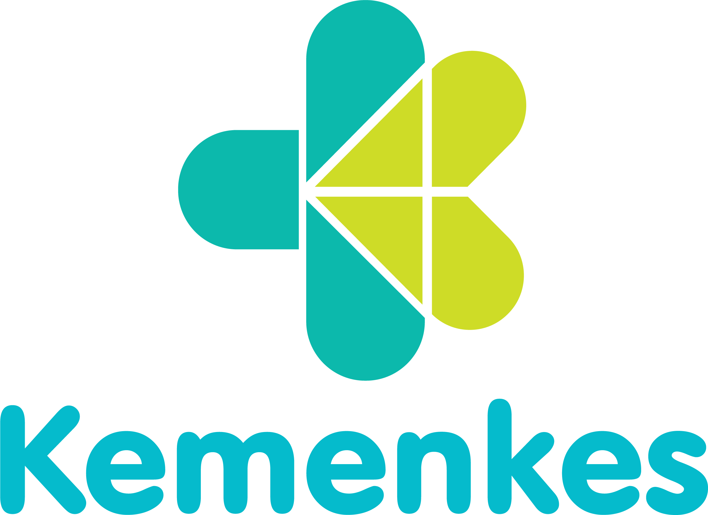
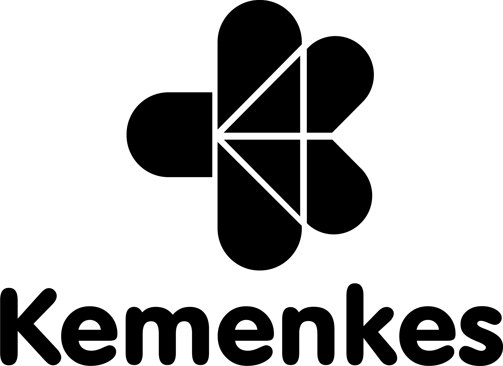
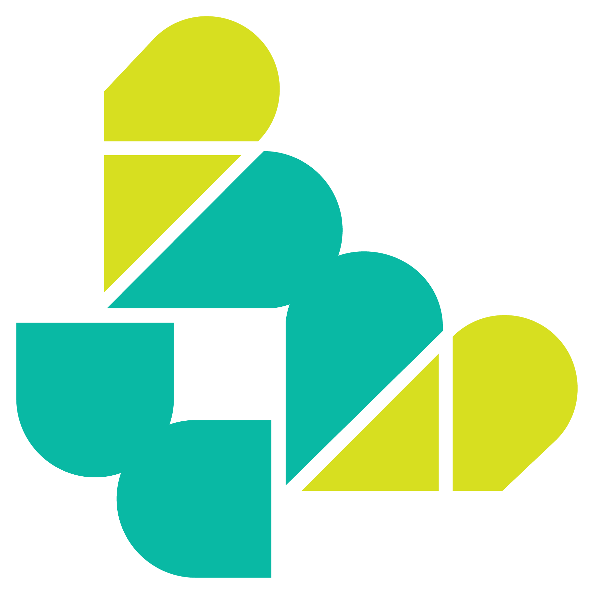
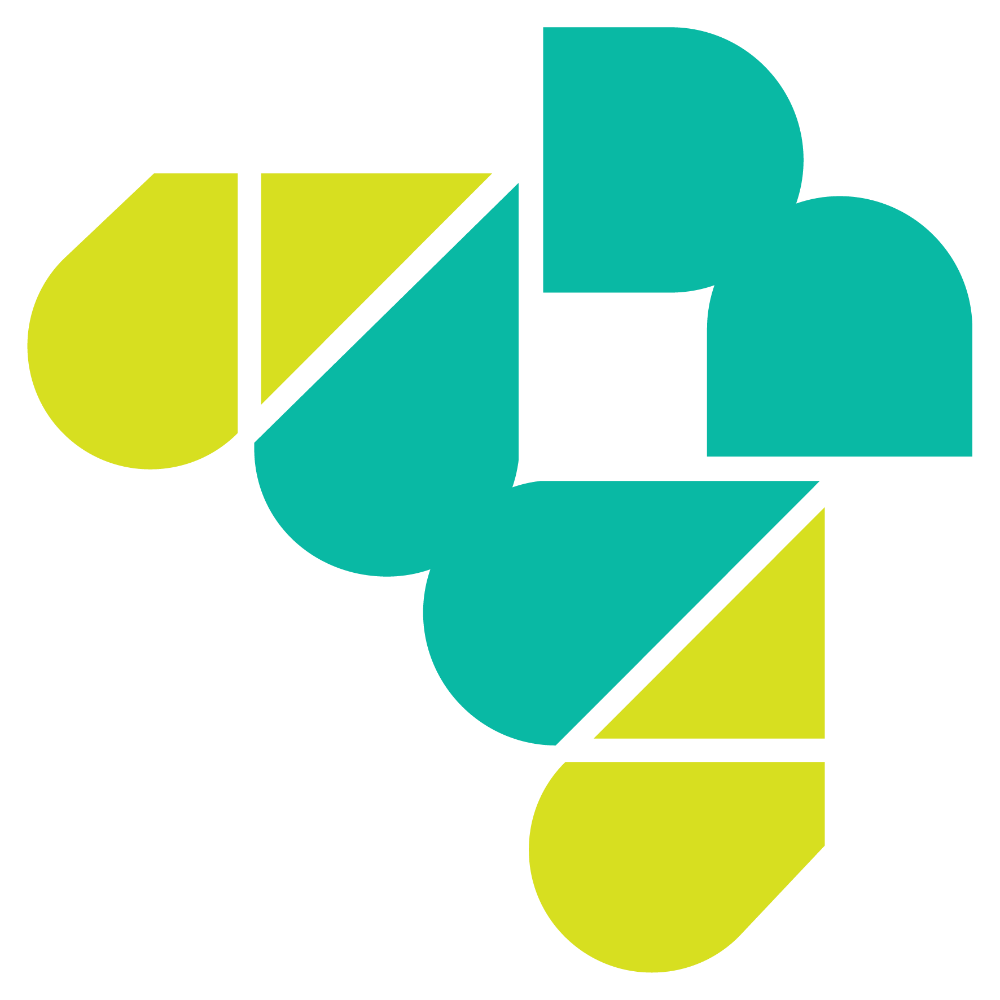
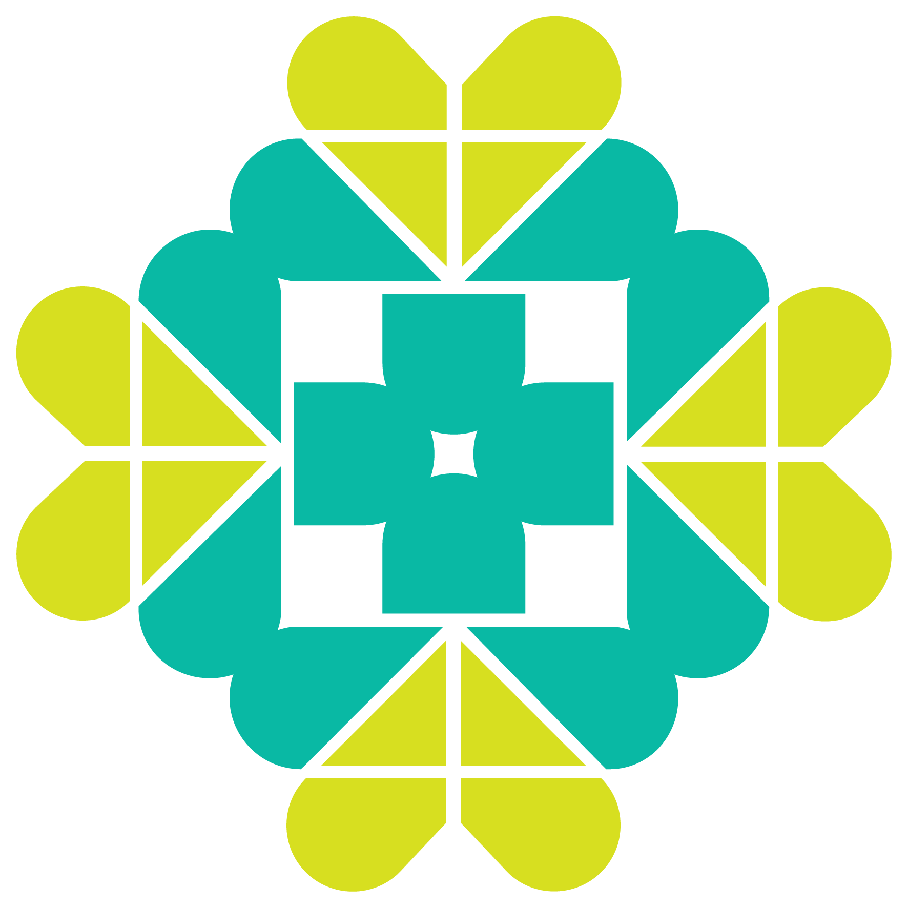
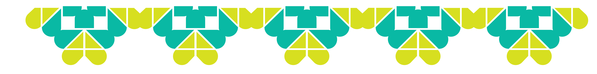
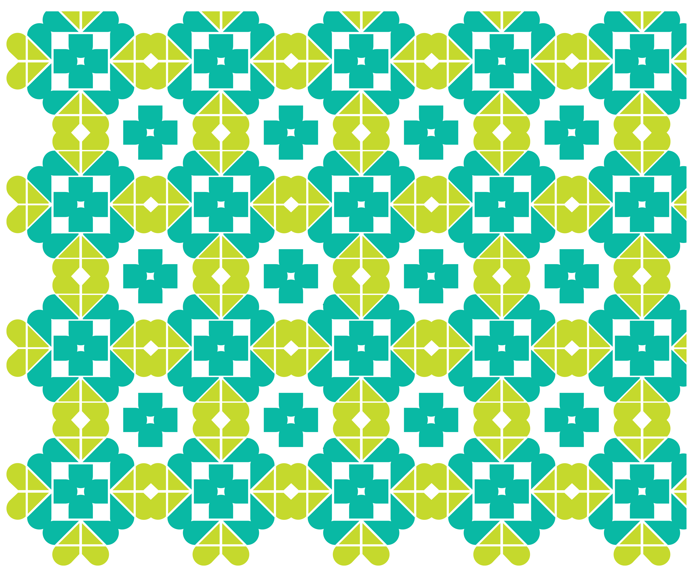

Logo horizontal
logo-horizontal-colorLatar putih · versi warna
logo-horizontal-blackLatar putih · hitam
logo-horizontal-whiteLatar teal · putih
Logo vertikal

logo-vertical-color
logo-vertical-blacklogo-vertical-whiteSupergrafis

supergrafis-sudut-v1
supergrafis-sudut-v2
supergrafis-elemen
supergrafis-sisi
supergrafis-backgroundAturan pemakaian
- Jangan mewarnai ulang, meregangkan, atau memotong logo.
- Di latar putih gunakan versi warna atau hitam; di latar teal gunakan versi putih.
- Beri clear space minimal setinggi huruf “K” pada semua sisi.
- Aset logo/supergrafis milik Kementerian Kesehatan; pakai hanya untuk keperluan yang diizinkan.